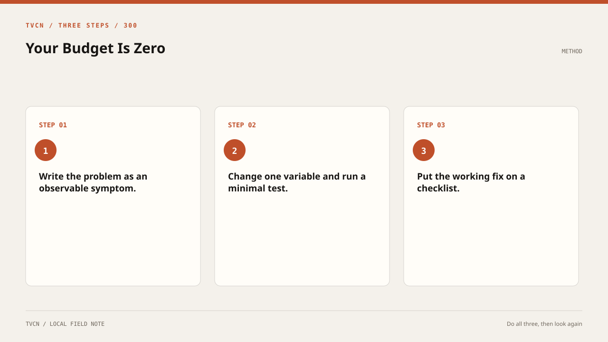

With no budget, change scale, not standards
Zero budget can shoot a small space, few characters, natural light, short runtime. Compress the script to one room, two people, one afternoon; do not keep five locations and call it low budget.
Spend on what the audience feels most: sound, actors, one key prop. Do not spread it evenly across gear.
Limits
Low cost is not roughness. The image can be simple, but sound must be audible and the story must change. Those are the floor, not budget lines.
Zero-budget projects start with what you will not do
Zero budget is not “free filming.” It is trading existing resources for a presentable result. Before starting, write three boundaries: no gear rental, no paid talent, no exterior; or keep only one. Clear boundaries make completion possible.
| Resource | What it trades for | Cost |
|---|---|---|
| Your skill | A 30-second film for the other side | Time, not cash |
| Their location or product | A free set and props | A usable film in return |
| Platform or community | Reach, cross-promotion, feedback | Not guaranteed clients |
The right goal for zero budget
Not “a big film,” but “one complete process.” Cut scope to one location, one camera, one finished piece, one revision. Use a phone or the camera you own; do not chase specs. Spend the time on script, location sound and edit rhythm.
Three zero-budget jobs to refuse
- A commercial brand that says “show us the result, then we'll talk money.” That is a spec pitch, not a collaboration.
- A project that asks you to front location, gear or talent costs. Zero budget is not zero cost.
- Client owns all rights and asks for unlimited revisions. With no budget, lock scope even harder.
If you do it, sign a one-page memo: who contributes what, where the film can be used, how credit reads, and when it ends. A zero-budget project still needs a delivery date, or it never ends.
Three-step flow

On set
Cut crowds, night exteriors, and vehicles. Rewrite with one room, two people, one prop.
Do this
With zero budget, cut scale, not structure. A simple story you can finish beats a better story you cannot afford to shoot.
- Reduce the script to one or two locations and one or two characters.
- Use available light, existing rooms, a phone, or borrowed gear.
- Spend what is left on sound and a meal for the crew; finishing is the priority.
Avoid
Do not hide behind “we will shoot it when we have money.” Make a version you can deliver now.
Image note. Covers, diagrams and step images on this page are editorial illustrations or structure diagrams, not photographs of a test performed here; they are not evidence of measured gear performance. Where an image is AI-assisted, the caption says so. Read the test conditions in the text before treating an image as proof.